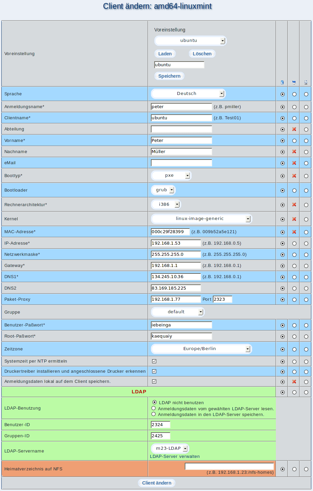

In diesem Dialog können Sie die Einstellungen eines Clients ändern. Neben den Eingabefeldern, die Sie bereits vom Client-Hinzufügen-Dialog kennen, gibt es drei Spalten, mit denen Sie bestimmen können, was mit den eingegebenen Werten geschehen soll.

- Linke Spalte: Wählen Sie diese Spalte aus, so bleibt der im Client und auf dem Server gespeicherte Wert unangetastet.
- Mittlere Spalte: Die Änderungen sollen auf dem Client vorgenommen und nachträglich mit dem Server abgeglichen werden.
- Rechte Spalte: Es werden nur die Datenbankeinträge auf dem Server geändert. Dies ist z.B. nützlich, wenn die Änderungen auf dem Client bereits per Hand vorgenommen wurden.
Unterabschnitte
root
2019-07-18